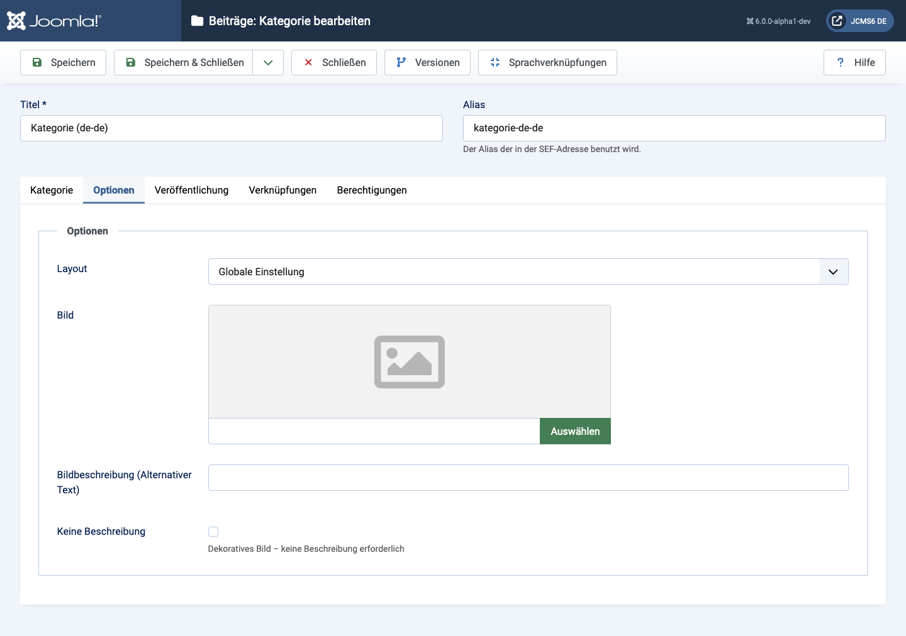

Komponenten, die Kategorien verwenden, verfügen über eine Registerkarte Optionen, mit der das Erscheinungsbild der Kategorie angepasst werden kann. Das folgende Beispiel zeigt die Registerkarte Optionen für die Inhaltskomponente, die für Artikel verwendet wird.
Verschiedene Komponenten bieten verschiedene Layoutoptionen aus der Dropdown-Liste. Zum Beispiel die Artikel: Kategorieoptionen Layout bietet:
---Von globalen Optionen---
Global verwenden
---Von der Komponente---
Blog
Liste
